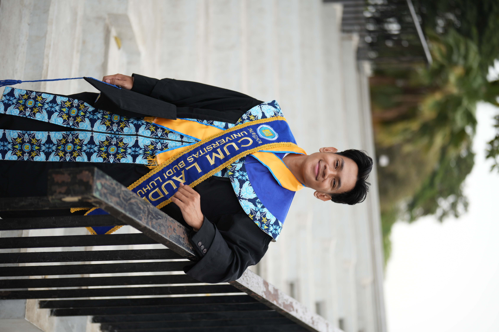
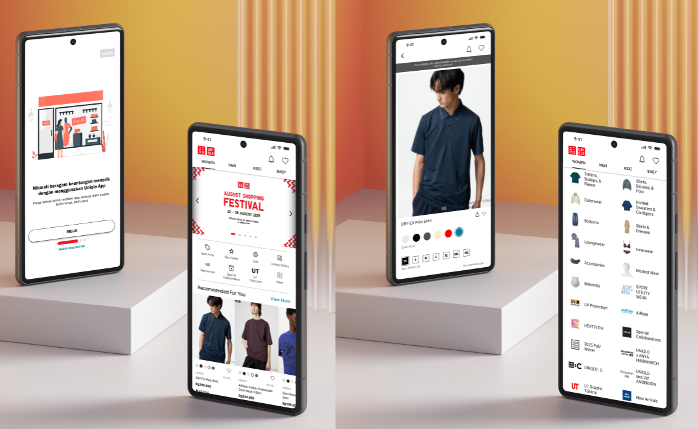
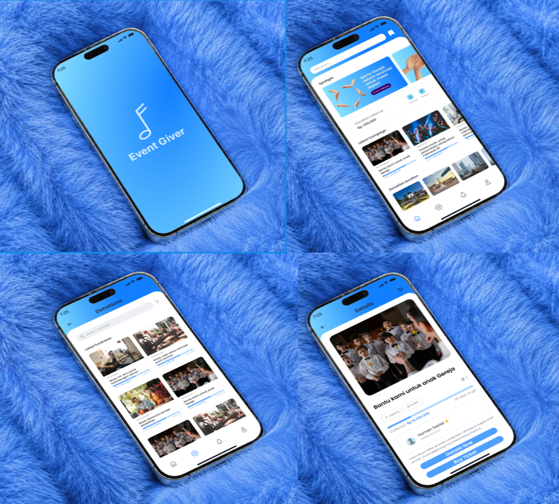

WHAT I SPECIALIZE IN
UI/UX Mobile Design
Merancang antarmuka aplikasi mobile yang intuitif, menarik secara visual, dan mudah digunakan.
UI/UX Website Design
Mendesain tampilan website yang responsif, dan berorientasi pada kenyamanan pengguna.
Saya merancang tampilan yang tidak hanya menarik secara visual, tetapi juga nyaman dan mudah digunakan. Dengan menggabungkan riset pengguna, estetika modern, dan interaksi yang bermakna, saya membantu menghadirkan tampilan yang berkesan dan nyaman digunakan.

Merancang antarmuka aplikasi mobile yang intuitif, menarik secara visual, dan mudah digunakan.
Mendesain tampilan website yang responsif, dan berorientasi pada kenyamanan pengguna.
Beberapa proyek pilihan yang saya rancang, mulai dari tahap riset, perancangan wireframe, pembuatan prototipe, hingga desain antarmuka akhir.
Melakukan kerja sama tim dalam research user persona untuk memenuhi kebutuhan aplikasi kedepannya dan Merancang Affinity Diagram untuk mengetahui kekurangan dan kelebihan yang ada pada aplikasi uniqlo
Lihat Case Study
Merancang alur pengguna (User Flow) yang efisien untuk menyatukan proses pembelian tiket dan donasi dalam satu platform dan Mengembangkan antarmuka (UI) aplikasi mobile dengan pendekatan clean design
Lihat Case Study